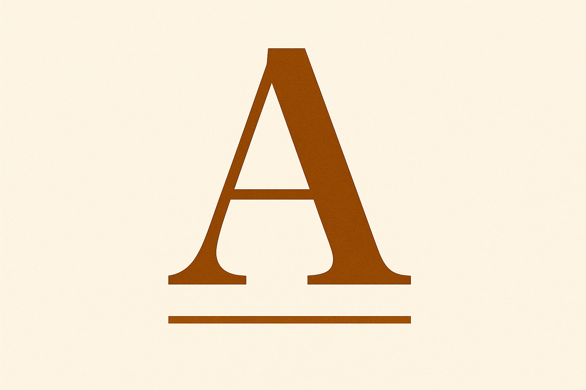
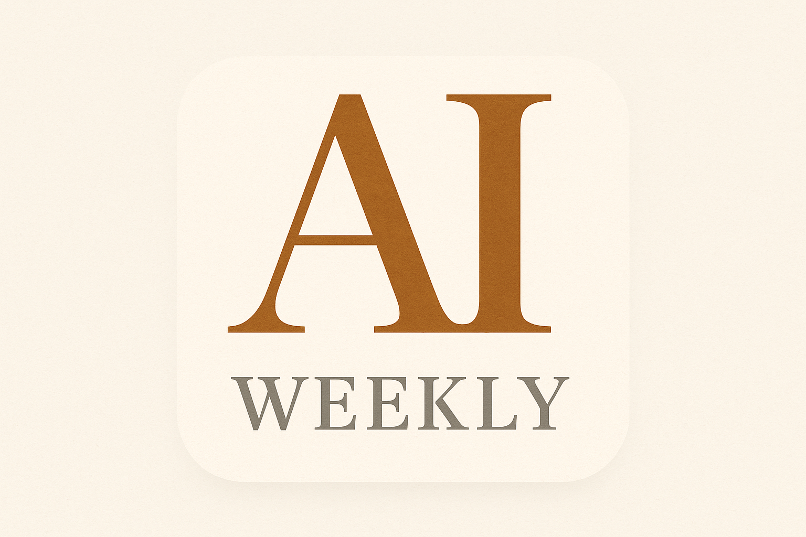

Three directions for AINews Weekly. Each is a 1024 × 1024 PNG (Apple applies the rounded-corner mask itself). Pick one, tell Claude which letter, and we ship.
Recommendation: B — strongest brand identity (reads “AI” instantly at any size). Needs one re-render to fill the full square edge-to-edge.
ASerif “A”

Single bold serif capital A in deep amber on cream paper, with a thin amber rule beneath.
Already edge-to-edge, ships clean as-is
Classic, magazine-masthead aesthetic
At 29pt the rule may disappear; reads as “just a letter A”
How it looks at home-screen size
BAI WEEKLY monogram

“AI” large in serif amber, “WEEKLY” small below in muted gray. Tells the user exactly what the app is.
Strongest brand identity
“AI” reads at any size, even when WEEKLY is too small
Custom typography, doesn’t look like every other AI app
Has an inner-squircle artifact (model rendered home-screen mockup); needs a quick re-render to fix
How it looks at home-screen size
CNewspaper page
Abstract folded newspaper / page icon in amber on cream.